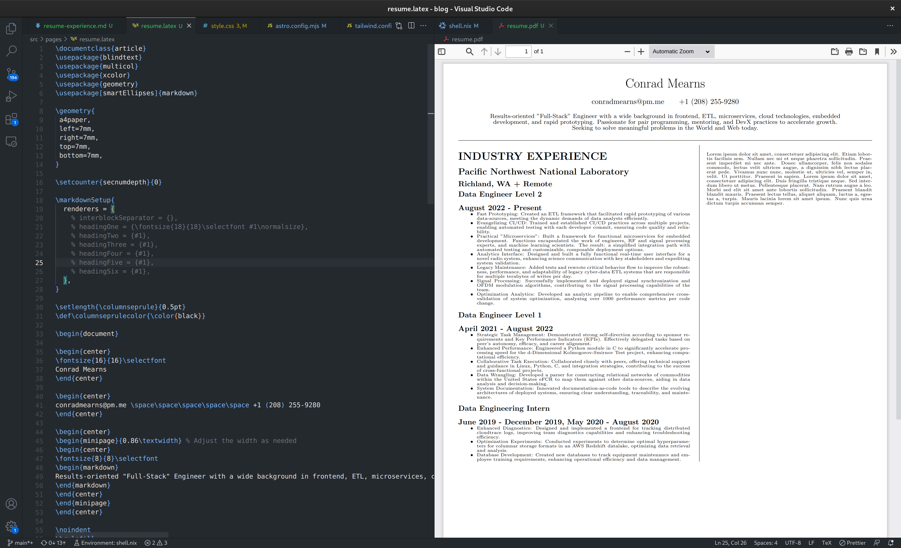

LaTeX Notes
A pile of links and snippets for LaTeX: pdflatex, nix flakes, font sizes, minipages and letter-spacing.

with import <nixpkgs> { };
let
tex = (pkgs.texlive.combine {
inherit (pkgs.texlive) scheme-full
markdown
xcolor
geometry xstring
blindtext
;
});
in
stdenv.mkDerivation {
name = "node";
buildInputs = [
tex
...
];
...
}
pdflatex https://aty.sdsu.edu/bibliog/latex/LaTeXtoPDF.html nix flakes with latex https://flyx.org/nix-flakes-latex/ font size reset https://tex.stackexchange.com/questions/423334/how-to-store-and-restore-the-current-font-size remove heading numbers https://tex.stackexchange.com/questions/297265/remove-sections-numbering latex markdown https://anorien.csc.warwick.ac.uk/mirrors/CTAN/macros/generic/markdown/markdown.html#options minipage https://www.sascha-frank.com/latex-minipage.html tracking https://tex.stackexchange.com/questions/62346/enlarging-tracking-letter-spacing tracking https://tex.stackexchange.com/questions/66494/new-command-for-spacing-letters-in-microtype indent https://tex.stackexchange.com/questions/91635/add-white-space-to-manually-indent-line commandline overrides https://tex.stackexchange.com/questions/1492/passing-parameters-to-a-document makefiles for latex https://scaron.info/blog/makefiles-for-latex.html